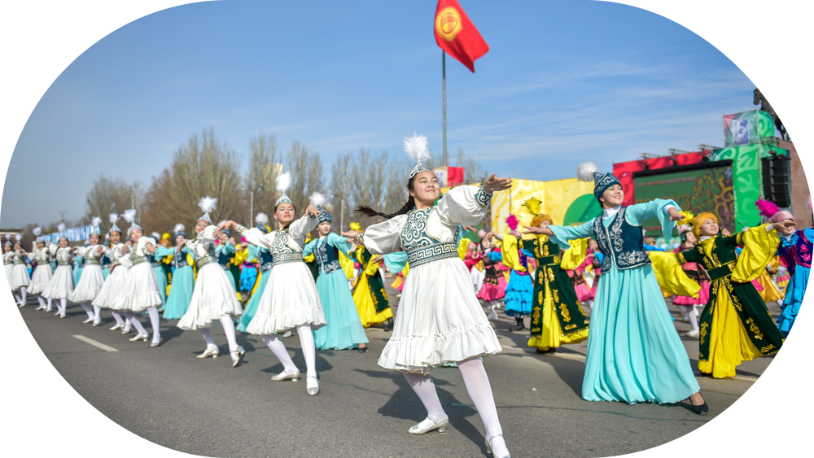

Нооруз
Нооруз – это один из самых древних праздников, который отмечают во многих странах, включая Кыргызстан. Он символизирует приход весны, обновление природы и начало нового года по солнечному календарю. Этот день наполнен радостью, гостеприимством и особыми традициями, которые передаются из поколения в поколение.
История и значение праздника
Нооруз возник более 3000 лет назад и был частью культуры народов Средней Азии, Ирана и Ближнего Востока. В переводе с персидского «Нооруз» означает «Новый день» (نوروز). Он связан с днем весеннего равноденствия, когда день и ночь становятся равными, а природа пробуждается после долгой зимы.
В древности люди верили, что в этот день начинается новый жизненный цикл, поэтому Нооруз был не просто праздником, а временем перемен, очищения и надежды на хороший год.
Сегодня этот день отмечают 21 марта, и в Кыргызстане он является официальным выходным и национальным праздником.

Как празднуют Нооруз в Кыргызстане?
Подготовка к празднику начинается заранее. Люди приводят в порядок свои дома, выбрасывают ненужные вещи, прощают обиды и примиряются друг с другом. Считается, что встречать новый год с чистым домом и добрыми мыслями – значит привлечь счастье и благополучие.
Когда наступает праздничный день, улицы наполняются весельем. Проводятся концерты, спортивные соревнования, театрализованные представления, а семьи собираются за богато накрытыми дастарканами. Главное в этот день – тепло общения, ведь Нооруз напоминает о важности единства, доброты и уважения к традициям.
Традиции и угощения
Нооруз невозможно представить без национальных игр и состязаний. В этот день проходят:
- Көк-бөрү – зрелищная игра всадников, символизирующая силу и ловкость,
- Борьба алыш – национальная борьба,
- Скачки, концерты и народные гуляния, создающие атмосферу праздника.
Неотъемлемой частью торжества является праздничный дасторкон. На столе можно увидеть традиционные блюда:
- Сумолок – главное угощение праздника,
- Боорсоки – воздушные жареные тестовые квадратики,
- Бешбармак – мясное блюдо, которое подают в особые дни,
- Плов, курут, чай и другие национальные лакомства.
Главным символом праздника считается сумолок – сладкое угощение, которое готовят только раз в год.
Как готовят сумолок?
Сумолок – это не просто блюдо, а настоящий обряд, который объединяет людей. Его готовят всю ночь, а процесс сопровождается песнями, шутками и пожеланиями счастья.
- Пророщенную пшеницу измельчают и выжимают из нее сок.
- В большом казане смешивают пшеничный сок, муку и воду.
- Варят 10-12 часов, постоянно помешивая. Чтобы сумолок не пригорел, в казан кладут гладкие камни.
- Постепенно блюдо становится темно-коричневым и сладким.
- Когда сумолок готов, его оставляют на ночь, а утром угощают всех желающих.
Считается, что если во время приготовления загадать желание, оно обязательно сбудется. А если кому-то попадется камень из казана, это добрый знак – к счастью и удаче.
Нооруз – праздник добра и надежды
Этот день несет в себе особую атмосферу тепла, гостеприимства и радости. В Кыргызстане Нооруз отмечают с размахом, сохраняя древние обычаи и передавая их новым поколениям. Он напоминает, что весна – это время обновления, когда каждый может оставить позади прошлое и с чистыми мыслями вступить в новый год.
Встретить этот день в кругу близких, разделить радость с друзьями и попробовать ароматный сумолок – значит стать частью великой традиции, которая живет уже тысячелетия.